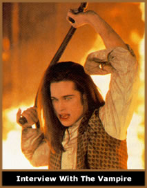

(Paul
Hodkinson,"GOTH - Identity, Style and Subculture")
Talvez o mais óbvio
seja que o estilo gótico, orbite uma ênfase geral
em artefatos, aparências e música considerados
adequadamente escuros, sombrios e, algumas vezes, macabros.
Os entrevistados do questionário a seguir, indicam algumas
das formas em que estes temas se manifestam:
WQ5b:
Em suas próprias palavras, por
favor explique, do que se trata a cena gótica?
107
(mulher): Música (obscura,
depressiva), o visual, muito preto, faces brancas, delineador
preto, crucifixos, cemitérios.
Mais óbvio e importante,
era uma avassaladora e consistente ênfase na cor preta,
tanto em termos de vestuário, cabelo, decoração
doméstica e até mesmo bichos de estimação!
Em termos de aparência pessoal, o tema também foi
implícito na tendência de muitos góticos
a usar uma base branca sobre suas faces para destacar o usualmente
consistente e estendido delineador preto, o blush acentuando
as maçãs do rosto e o batom escuro, todas coisas
que podem ser ligadas diretamente a algumas bandas do começo
dos anos 80. Muito ironicamente, considerando a quantidade de
tempo que a maioria deles gastavam na sua aparência, góticos
também tendem a esperar que seus pubs e clubes sejam
particularmente escurecidos, frequentemente com fumaça
no palco ou atmosfera artificial.
Enquanto um número
significante de elementos primevos, como os mencionados acima,
estavam evidentemente vivos e bem, o tema do sombrio e do macabro
também se desenvolveu de várias formas. Modas
surgiram, dentro da cena, para itens que eram relativamente
periféricos ao estilo da geração original,
apesar de consistentes com os temas gerais com os quais suas
imagens e sons estavam associados. Por exemplo, uma vez que
o tema geral do gótico tinha se estabelecido por algum
tempo, muitos continuaram a elaborar suas associações
lógicas com o horror bebendo de várias imagens
originárias na ficção macabra, como crucifixos,
morcegos e vampiros, às vezes de uma forma auto-irônica,
às vezes não. Algumas vezes, tais progressões
estiveram ligadas a influência clara e direta de produtos
mediáticos.
O
perfil da ficção de vampiros e horror, por exemplo,
foi altamente desenvolvido em particular no começo dos
anos 90 por filmes de Hollywood como Bram
Stoker’s Drácula (1992) e Interview
With The Vampire (1994). A aparência dos vampiros
protagonistas destes filmes reforçou o já existente
entusiasmo entre os homens góticos por faces esbranquiçadas,
longos cabelos negros e óculos escuros.
Enquanto isso, para as mulheres,
as representações gerais de elementos da moda
dos séculos dezoito e dezenove nestes filmes encorajou
que se fosse mais longe na adoção de certos estilos
de vestimenta associados com o revival gótico dessas
épocas e do período Vitoriano que se seguiu a
eles. Apesar de já estarem estabelecidos como aceitáveis
devido a influência original de elementos da moda punk,
e depois mais encorajados por artistas do final dos anos 80,
como Patrícia Morrison e Juliane Reagan, o uso de corsets
de cor escura, corpetes e tops e roupas de laço ou veludo
foram indubitavelmente encorajados pelo desenvolvimento de um
elo mais direto entre participantes góticos e ficção
vampírica.
Entre uma, de certo modo,
pequena minoria, particularmente dominada pela temática
vampírica, adereços pessoais indicadores de status
passaram a incluir presas falsas, lentes de contato coloridas
e elaboradas maquiagens de estilo "horror". Sem dúvida,
havia um subgrupo frouxamente delimitado, no qual a ênfase
direta na ficção vampírica - através
da aparência, conversação, coleções
de literatura e até mesmo role-playing games (RPG)- era
particularmente perceptível. Como parte da cena gótica
britânica como um todo, todavia, aqueles considerados
obcecados demais com tais temas ou que os levavam muito a sério,
eram às vezes olhados com estranheza. A maioria, cujos
interesses eram essencialmente um conjunto de música
e moda relacionadas ao sombrio e ao macabro em termos mais gerais,
valorizavam uma apropriação mais sutil ou, ao
menos, mais bem-humorada, do imaginário de horror e tendiam
a considerar uma adoção extremada do vampirismo
como uma confirmação cruel dos estereótipos
populares. A visão a seguir, embora não-usual
pela sua franqueza, refletia os sentimentos de muitos:
D3
(homem): Os vampiros, você sabe,
aqueles que jogam Masquerade (rola-playing game de vampiro)
e tal, eles se vestem como góticos e realmente possuem
umas maquiagens horrendas e tal, e essas maquiagens invariavelmente
envolvem sangue falso escorrendo pelas suas faces e coisas desse
tipo, e aparecem nos clubes góticos e não conseguem
se encaixar completamente, porque perderam completamente a piada.
Da mesma forma que se manifestando
em uma grande variedade de formas se compararmos com a prática
do começo dos anos 80, aconteceram também, mais
para o final dos anos 90, transgressões mais óbvias
da ênfase no imaginário obscuro do que haviam acontecido
nos anos 80.
Mais perceptivelmente, embora
o preto tenha permanecido predominante, cores mais brilhantes
claramente se tornaram mais aceitáveis em termos de cabelo,
vestimenta e maquiagem. O que começou como uma deliberada
e bem-humorada transgressão de certos indivíduos,
resultou na aceitação translocal da anteriormente
detestada cor rosa, como um complemento do preto, entre os góticos
britânicos. Isto foi seguido por um relaxamento similar
para as regras relacionadas a outras cores brilhantes. Crucialmente,
todavia, elas eram usualmente justapostas a cabelos, maquiagens
e outras roupas mais consistentes com o tema sinistro que estamos
descrevendo. O preto, então, permaneceu como a cor mais
proeminente para a ampla maioria dos góticos e, similarmente,
a maioria manteve uma variedade de outras características
específicas relacionadas ao tema que podiam ser relacionadas
com as bandas dos anos 80. Por exemplo, mesmo a pequena minoria
para os quais as cores escuras pareciam de significado marginal,
tendia a montar sua maquiagem no tão falado estilo gótico,
com excessivo delineador estendido, maçãs do rosto
acentuadas e base pálida.
Em termos gerais, a música
relacionada com a cena gótica durante o final dos anos
90 era mais diversificada que a moda. Apesar disso, do começo
dos anos 80 em diante, incluindo até a época de
minha pesquisa, uma significativa proporção dos
set-lists da maioria dos clubes de tendência gótica
poderia ser razoavelmente e acuradamente descrita usando um
ou mais dos adjetivos "escura", "profunda",
e "sombria". Tais temas relacionados, todavia, aplicados
a uma considerável variedade de música, com vocalistas
masculinos de voz profunda, vocalistas femininas de tom alto,
tempos tanto lentos como acelerados, vários estilos de
guitarra, do melodioso e ritmado até o agressivo e estilo
thrash, percussão acústica ou simulada eletronicamente
e, principalmente nos anos 90, acordes de teclado tanto atmosféricos
como seqüenciados com batidas mais aceleradas. Em particular,
existe pouca dúvida que jamais as bandas associadas à
cena gótica estiveram produzindo uma diversidade de estilos
tão considerável, abarcando desde aqueles focados
no gótico baseado em guitarra do começo e particularmente
final dos anos 80, passando por sonoridades que buscaram misturar
tais sons com acordes eletrônicos, seqüenciados e
batidas dançantes, até outros que resistiram grandemente
a tal tecnologia em favor do que consideraram como um melódico,
atualizado e irresistível estilo indie de som
gótico.
Apesar
da sua variedade, todavia, existiam poucas bandas associadas
com a cena gótica que não tinha nenhuma conexão
com de algum tipo com os temas obscuros e sombrios que temos
descrito. Até as bandas mais abertamente dance
que atraíram uma consistente audiência gótica,
como Apoptygma Berzerk, Covenant e VNV
Nation, mantiveram vocais profundo e áspero, letras
sombrias e metafóricas e poderosos acordes atmosféricos.
Se a consistente manifestação
do sombrio e do macabro na música e na moda era clara,
sua importância em termos de comportamento, atitude e
perspectiva era ambígua. Excessiva depressão e
amuo pareciam ser exibidos por alguns indivíduos, mas
a maioria se tornou resistente a estes traços, considerando-os,
da mesma forma que o excessivo interesse em vampirismo, como
um deslocado estereótipo negativo de gótico ostentado
por pessoas de fora da cena. Por essa razão, enquanto
alguns góticos clamavam que pertencer a sua subcultura
implicava apresentar certas "atitudes", a maioria
minimizava a importância de perspectivas negativas ou
miseráveis sobre a vida, preferindo enfatizar um entusiasmo
positivo em relação aos estilos de música
e moda gótica. Isto ficou particularmente claro no questionário
do Whitby Festival (famoso festival gótico no
norte da Inglaterra).
WQ5b:
Nas suas próprias palavras,
por favor explique, do que se trata a cena gótica?
32
(mulher): Se deleitar em uma espirituosa visão
do lado obscuro da vida, distendendo as fronteiras do estilo
e som.
40
(mulher): Para mim é sobre me vestir
como eu me sinto, e não sobre ser miserável e
aborrecida.